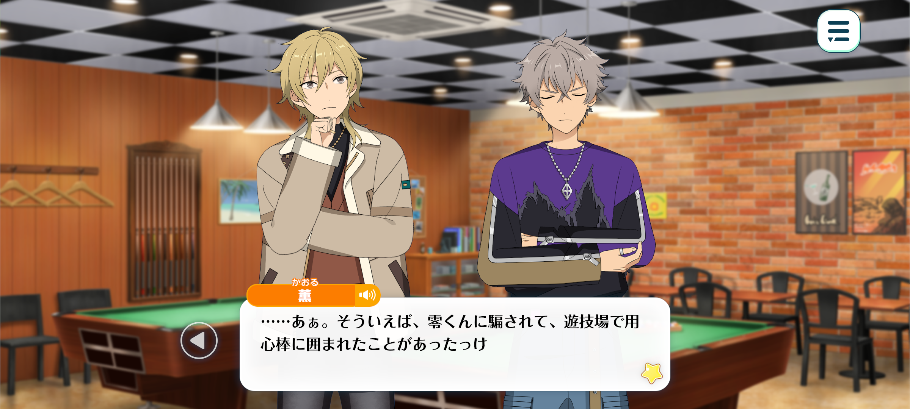
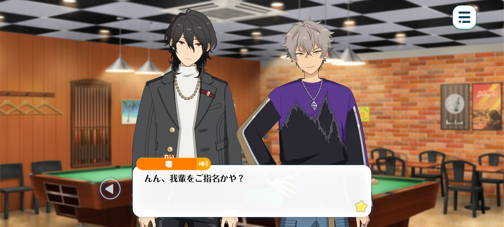
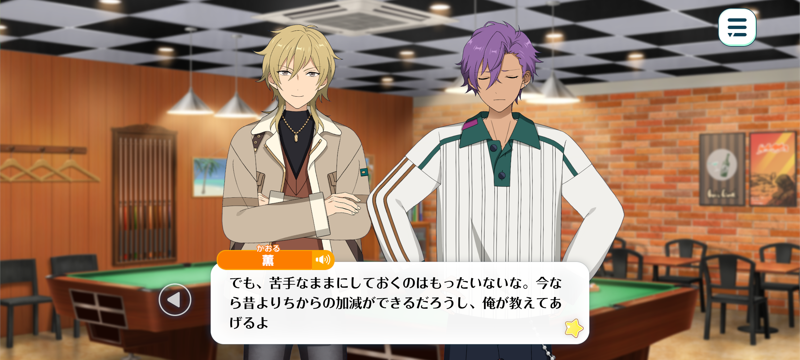
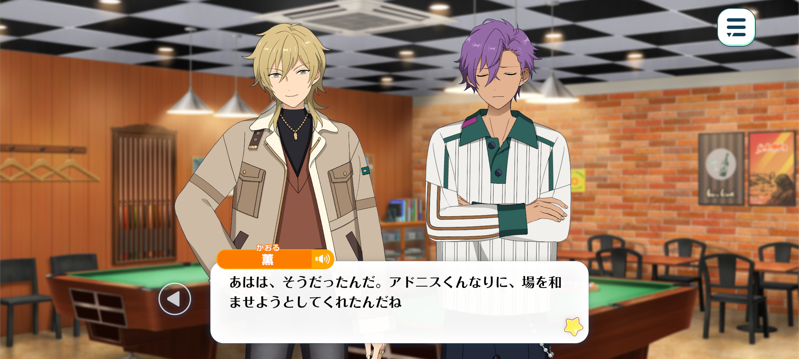
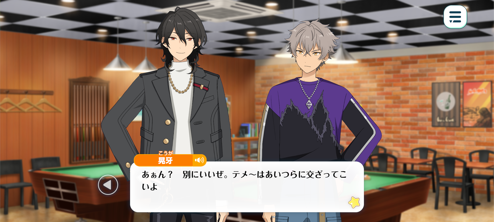
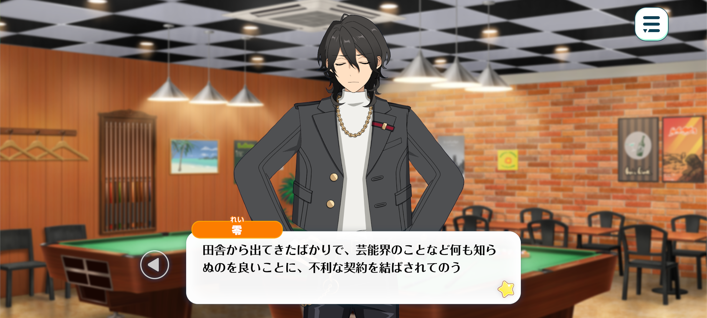

In Memoriam◆Handwriting, Chasing, Rambling
Good-Bye / Chapter 4


Time: Later that evening
Location: At a billiards hall in the shopping district

Kaoru: —Koga-kun, you’ve been looking around for a while now. Are you nervous about something?
Koga: No, ‘course not. But bein’ here is remindin’ me of filmin’ Love and Beast.
Kaoru: …Oh yeah. Now that you mention it, didn’t Rei-kun trick me and I ended up at an arcade surrounded by body guards?
Rei: “Trick” is a rather harsh word, don’t you think? That was merely one part of what I would consider some excellent acting coaching.
Adonis: Umu. Thanks to that experience, I’ve gotten much better at expressing my anger.
…Perhaps that’s why I feel anger welling up inside of me looking at this billiards table.
Koga: Woah, woah! Don’t go pickin’ up random shit, man. Property damage is a serious offense.
If you want somethin’ t’throw then Hakaze-senpai’s right over there.
Kaoru: Why me? No fair! I’m not teaching you how to play billiards now!
Koga: Haah? Like I fuckin’ asked you to!
Kaoru: But you’ve been standing there without even picking up a cue. You have no idea what you’re doing, do you?
When it comes to billiards, you'll improve much faster if you learn from a professional. If you want me to show you the ropes, you’ll have to show me a little respect first ♪
Koga: Shut it. Who’d trust you t’teach them anythin’?
I don’t need you~. I’ve got Sakuma-senpai, after all…☆

Rei: Hh? Did you call for me?
Koga: Yeah. You definitely know how to play, right?
Come on, don’t keep me waitin’. Teach me how.
Rei: Good grief. Is that any way to speak to your teacher?
Koga: Yeah. It’s not like I’m payin’ you.
Rei: I suppose so. Well, billiards is a game that rather few young people seem to be familiar with nowadays.
I’ll be quite pleased if you remember what I teach you. Then, perhaps, we can have a match together one day.
How about you, Adonis-kun? Have you ever played?
Adonis: No. I started learning the basics when I was younger, but…
I accidentally snapped the cue stick in half. I haven’t touched one since.

Kaoru: You snapped it in half…? Right, of course, Adonis-kun has super human strength, after all.
But if you started learning, it’d be a waste to stop there. You’re better at controlling your strength now right? I’ll teach you how to play.
Adonis: Is that okay?
Kaoru: Of course. It would be a little boring if you just stood there watching, hm? Besides, I was the one who invited you here.
Since we’ve come all this way, I want everyone to have a good time. And as a billiards lover, it’s my duty to make sure of that ♪
So I’ll teach Adonis-kun, and you can teach Koga-kun.
Once you’ve both got the basics down, we’ll play against each other. Let’s see whose the better teacher, Rei-kun ♪
Rei: Kukuku. Let us see…♪
Kaoru: Right, let’s get started then. First, I’ll teach you the basic stance you should use whilst playing…
Adonis-kun, you’re not angry at the table anymore, right? I’d rather you didn’t damage it…

Adonis: Oh…I apologise, that was my attempt at a joke.
I’m not angry. When Love and Beast came up, I thought I would try making a joke.
But the conversation moved on before I had the chance to explain myself.
Kaoru: Ahaha, yeah? You were trying to lighten the mood in your own, very Adonis-kun way.
Adonis: Umu. You two are being thoughtful. You’re both trying to find ways to lift Oogami’s spirits, aren’t you?
I felt that all I could do was give him a shoulder to cry on. It’s a little frustrating.
Kaoru: I see. But that can be a good thing, too.
Rei-kun and I decided we’d step back and wait until Koga-kun was ready.
But that doesn’t necessarily mean that him being alone is what’s best for him, right?
Sometimes, just having someone there beside you is enough. You don’t have to say anything. You can just listen to whatever he wants to tell you—
It’s good for him to have someone like that.
Besides, there are probably some things he’d only feel comfortable sharing with someone his own age.
Adonis: Things he could only share with me…
Kaoru: Exactly. So don’t overthink it, ‘kay?
After all, supporting someone doesn’t mean doing some grand gesture for them. Sometimes, just being there is enough.
Adonis: …I see. You’ve changed my mind.
Thank you, Hakaze-senpai.
Time: An hour later

Rei: …Oya? It seems Kaoru-kun and Adonis-kun have departed?
They must have gone to find something to eat. Koga, why don’t we take a little respite ourselves?
Koga: Nah, I’m good. I’ll just make do with those snacks over there.
I wanna get the hang of what you taught me before I forget it all.
Rei: I see. Ambition is a wonderful thing. Very well, then. I shall remain here with you.
Koga: Haa? It’s fine, you can go hang out with them.
Rei: No, I’m not particularly hungry.
Besides, surely you’d feel a little more confident with your mentor close at hand?
Koga: …Well, if that’s what you want. Be my guest.
…
…Hey, Sakuma-senpai.
If we’re takin’ a break, do ya think you could tell me about gra– MARBLING?
Anything’s fine. But not the stuff everyone already knows. I wanna hear the things only you know.
Rei: …I see. If that is what you wish for, then very well.
The first time we met was in an old café in the English countryside. There happened to be a snooker table inside.
Koga: Snooker?
Rei: Yes. It is a variety of billiards, and I believe it is rather more popular in the UK.
I had never played billiards before, so naturally, I was rather curious.
When he saw me, he remarked “haven’t seen a foreigner around here in a while now.” Then, without so much as a pause, he began teaching me how to play.
After that, whenever our paths happened to cross, we’d invariably end up striking a conversation.
Koga: Really…? So you learnt how to play from him…

Rei: Indeed. He could be rather difficult at times, but he was remarkably kind-hearted towards those he cared for.
Though, I must confess, I was hardly a perfect person myself back in those days.
Then again, there are precious few people who can pass through life without making a mistake or two.
When one is young, you learn what is right by forging your own path. Sometimes that means getting hurt. Sometimes, it means making mistakes.
It was unfortunate that, in his case, there were those willing to take advantage of his inexperience.
He had come from the countryside and knew very little about the inner workings of the entertainment industry. As a result, he was pressured into signing a contract that was deeply unfavourable for him.
No matter how hard he worked, no matter how much he earned, the greater part of his income fell into the pockets of his agency.
Behind his seemingly glamourous life, behind all those adoring cheers from his fans, he endured a great deal of hardship.
Eventually, it became more than he could bear, and he severed ties with the agency. Yet freedom, as it turns out, does not necessarily mean everything will simply fall into place.
He found himself unable to work in the way he wished, and he frequently clashed with those around him. With newfound freedom came an even greater burden - the responsibility of deciding what to do with it. And so, for some time, he struggled.